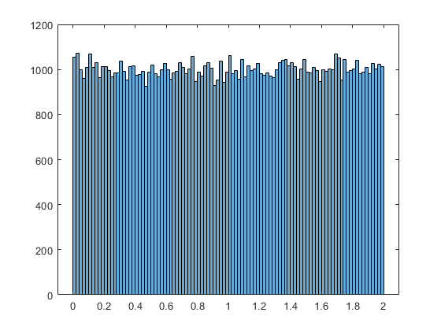
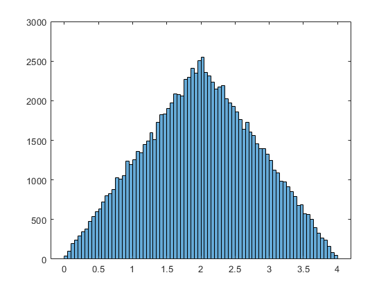
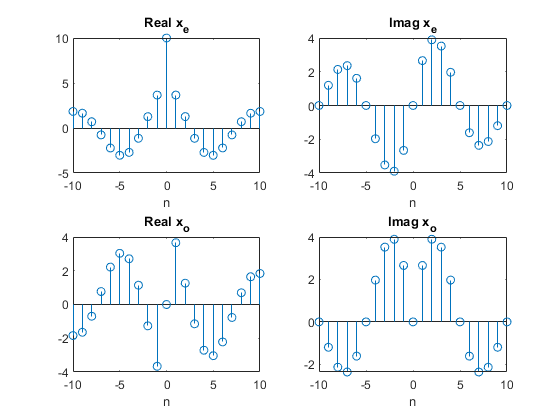

Contents
clear; clc;
Problemas
P2.1
1)
n1 = -5:15; x1 = 3*impseq(-2,min(n1),max(n1))+ 2*impseq(0,min(n1),max(n1))+5*impseq(7,min(n1),max(n1)); stem(n1,x1); xlabel('n'); ylabel('x(n)');
2)
n2 = -10:10; x2 = impseq(0,min(n2),max(n2)); for k=-5:5 x2 = x2+exp(-abs(k))*impseq(2*k,min(n2),max(n2)); end stem(n2,x2); xlabel('n'); ylabel('x(n)');
3)
n3 = 0:20; x3 = 10*stepseq(0,min(n3),max(n3))-5*stepseq(5,min(n3),max(n3))-10*stepseq(10,min(n3),max(n3))+5*stepseq(15,min(n3),max(n3)); stem(n3,x3); xlabel('n'); ylabel('x(n)');

4)
n4 =-30:20; x4 = exp(0.1*n4).*(stepseq(-20,min(n4),max(n4))-stepseq(10,min(n4),max(n4))); stem(n4,x4); xlabel('n'); ylabel('x(n)');
5)
n5 = -200:200; x5 = 5*(cos(0.49*pi*n5)+cos(0.51*pi*n5)); stem(n5,x5); xlabel('n'); ylabel('x(n)');
6)
n6 = -200:200; x6 = 2*sin(0.01*pi*n6).*cos(0.5*pi*n6); stem(n6,x6); xlabel('n'); ylabel('x(n)');
7)
n7 = 0:100; x7 = exp(-0.05*n7).*sin(0.1*pi*n7+pi/3); stem(n7,x7); xlabel('n'); ylabel('x(n)');
8)
n8 = 0:100; x8 = exp(0.01*n8).*sin(0.1*pi*n8); stem(n8,x8); xlabel('n'); ylabel('x(n)');

P2.2
nbins = 100; % bins
1) Sequencia randomica de N=100000 amostras independentes e uniformemente distribuidas em [0,2]
N1 = 100000; x1 = 2*rand(1,N1);
histogram(x1,nbins);
2) Sequencia randomica Guassiana de N=10000 amostras com media 10 e variancia 10.
N2 = 10000;
u = 10;
s = 10;
x2 = random('Normal',u,s,N2);
histogram(x2,nbins);

3) x3(n) = x1(n)+x1(n-1)
n1 = 1:N1; [x3,n3] = sigshift(x1,n1,1); [x3,n3] = sigadd(x1,n1,x3,n3); histogram(x3);
4) x4(n) = sum(k=1:4)yk(n), yk(n) é uma sequencia independente das outras com distribuição uniforme em [-0.5,0.5]
N4 = 1:10000; y = zeros(1,length(N4)); for i=1:4 y = y-rand(1,length(N4)); end histogram(y,nbins); % Distribuição Normal. Lembrando que existe uma função do matlab que % encontra uma distribuição mais próxima do histograma (histfit).

P2.3
Exemplo do livro: xtilde = x'*ones(1,P); xtilde = xtilde(:); xtilde = xtilde';
1) x1(n)={...,-2,-1,0,1,2,...}
x1 = -2:2; P1 = 5; xp1 = x1'.*ones(1,P1); xp1 = (xp1(:))'; stem(-2:2+P1*4,xp1); xlabel('n'); ylabel('x_{1}(n)');
2) x2(n) = exp(0.1*n)(u(n)-u(n-20))
n2 = 0:20; x2 = exp(0.1*n2).*(stepseq(0,min(n2),max(n2))-stepseq(20,min(n2),max(n2))); P2 = 3; xp2 = x2'.*ones(1,P2); xp2 =(xp2(:))'; stem(xp2); xlabel('n'); ylabel('x_{2}(n)');
3) x3(n) = sin(0.1*pi*n)(u(n)-u(n-10))
n3 = 0:10; x3 = sin(0.1*pi*n3).*(stepseq(0,min(n3),max(n3))-stepseq(10,min(n3),max(n3))); P3 = 4; xp3 = x3'.*ones(1,P3); xp3 =(xp3(:))'; stem(xp3); xlabel('n'); ylabel('x_{3}(n)');
4) x4(n) = [...,(1),2,3,...]+[...,(1),2,3,4,...] 0<=n<=24
x41 = 1:3; x42 = 1:4; xp41 = x41'.*ones(1,4); xp42 = x42'.*ones(1,3); xp4 = xp41(:)+xp42(:); xp4 = xp4.*ones(1,2); xp4 = (xp4(:))'; stem(xp4); xlabel('n'); ylabel('x_{4}(n)');

P2.4
x(n) = [2,4,-3,(1),-5,4,7]
n = -3:3; x = [2,4,-3,1,-5,4,7];
1) x1(n) = 2x(n-3)+3x(n+4)-x(n)
[x11,n11] = sigshift(x,n,3); [x12,n12] = sigshift(x,n,-4); [x13,n13] = sigadd(2*x11,n11,3*x12,n12); [x1,n1] = sigadd(x13,n13,-x,n); stem(n1,x1); xlabel('n'); ylabel('x_{1}(n)');

2) x2(n) = 4*x(n+4)+5x(n+5)+2x(n)
[x21,n21] = sigshift(x,n,-4); [x22,n22] = sigshift(x,n,-5); [x23,n23] = sigadd(4*x21,n21,5*x22,n22); [x2,n2] = sigadd(x23,n23,2*x,n); stem(n2,x2); xlabel('n'); ylabel('x_{2}(n)');

3) x3(n) = x(n+3)x(n-2)+x(1-n)x(n+1)
[x31,n31] = sigshift(x,n,-3); [x32,n32] = sigshift(x,n,2); [x3a,n3a] = sigmult(x31,n31,x32,n32); [x33,n33] = sigfold(x,n); [x33,n33] = sigshift(x33,n33,-1); [x34,n34] = sigshift(x,n,-1); [x3b,n3b] = sigmult(x33,n33,x34,n34); [x3,n3] = sigadd(x3a,n3a,x3b,n3b); stem(n3,x3); xlabel('n'); ylabel('x_{3}(n)');

4) x4(n)= 2exp(0.5*n)x(n) + cos(0.1*pi*n)x(n+2), -10<=n<=10;
nd = -10:10; [x41,n41] = sigmult(2*exp(0.5*nd),nd,x,n); [x42,n42] = sigshift(x,n,-2); [x42,n42] = sigmult(x42,n42,cos(0.1*pi*nd),nd); [x4,n4] = sigadd(x41,n41,x42,n42); stem(n4,x4); xlabel('n'); ylabel('x_{4}(n)');
P2.5
1) Demonstração bem simples.
2)
n=-100:100; y = exp(1i*0.1*pi*n); subplot(211) stem(n,real(y)); xlabel('n'); ylabel('real(y(n))'); subplot(212) stem(n,imag(y)); xlabel('n'); ylabel('imag(y(n))'); % Como o valor de w0 = 0.1*pi, então f0 = 0.1/2. Ou seja, 1/20 e isso nos % dá K = 1 e N = 20. Para N = 200 amostras, então K = 10. Onde conseguimos % nos gráficos que temos 10 períodos das partes reias e imaginárias de % y(n).

3)
n = -20:20; y = cos(0.1*pi*n); stem(n,y); xlabel('n'); ylabel('y(n)'); % temos um período igual ao mostrado anteriormente.
P2.6
1)
n1 = 0:9; x1 = 0:9; [xe1,xo1,m1] = evenodd(x1,n1); subplot(211) stem(m1,xe1) xlabel('n'); ylabel('x1_{e}(n)'); title('Par'); subplot(212) stem(m1,xo1) xlabel('n'); ylabel('x1_{o}(n)') title('Impar');
2)
n2 = -10:10; x2 = exp(0.1*n2).*(stepseq(-5,min(n2),max(n2))-stepseq(10,min(n2),max(n2))); [xe2,xo2,m2] = evenodd(x2,n2); subplot(211) stem(m2,xe2) xlabel('n'); ylabel('x2_{e}(n)'); title('Par'); subplot(212) stem(m2,xo2) xlabel('n'); ylabel('x1_{o}(n)') title('Impar');
3)
n3 = -20:20; x3 = cos(0.2*pi*n3+pi/4); [xe3,xo3,m3] = evenodd(x3,n3); subplot(211) stem(m3,xe3) xlabel('n'); ylabel('x2_{e}(n)'); title('Par'); subplot(212) stem(m3,xo3) xlabel('n'); ylabel('x1_{o}(n)') title('Impar');
4)
n4 = 0:100; x4 = exp(-0.05*n4).*sin(0.1*pi*n4+pi/3); [xe4,xo4,m4] = evenodd(x4,n4); subplot(211) stem(m4,xe4) xlabel('n'); ylabel('x2_{e}(n)'); title('Par'); subplot(212) stem(m4,xo4) xlabel('n'); ylabel('x1_{o}(n)') title('Impar');
P2.7
2)
n = 0:10; x = 10*exp((-0.1+1i*0.2*pi)*n); [xe,xo,m] = evenodd(x,n); subplot(221) stem(m,real(xe)); xlabel('n'); title("Real x_{e}"); subplot(222) stem(m,imag(xe)); xlabel('n'); title("Imag x_{e}"); subplot(223) stem(m,real(xo)); xlabel('n'); title("Real x_{o}"); subplot(224) stem(m,imag(xo)); xlabel('n'); title("Imag x_{o}");
P2.8
1) função implementada
2)
n = -50:50; x = sin(0.125*pi*n); M = 4; [y,m] = dnsample(x,n,M); subplot(211) stem(n,x) xlabel('n'); ylabel('x(n)'); subplot(212) stem(m,y) xlabel('n'); title('M=4'); ylabel('y(n)');
3)
n2 = -50:50; x2 = sin(0.5*pi*n); M = 4; [y2,m2] = dnsample(x2,n2,M); subplot(211) stem(n2,x2); xlabel('n'); ylabel('x(n)'); subplot(212) stem(m2,y2); xlabel('n'); title('M=4'); ylabel('y(n)'); % A função está correta, porém devido a aproximações feitas no matlab o % valor é dado como diferente de zero. Mas pela escala de 1e-14, podemos % verificar que de fato é zero o seu valor.
P2.9
nx = 0:20; x = 0.9.^nx; ny = -20:0; y = 0.8.^(-ny); % r_{xx} [xf,nxf] = sigfold(x,nx); [rxx,nrxx] = conv_m(x,nx,xf,nxf); subplot(311) stem(nx,x); xlabel('n'); ylabel('x(n)'); subplot(312) stem(nxf,xf); xlabel('n'); ylabel('x(-n)'); subplot(313); stem(nrxx,rxx); xlabel('n'); ylabel('r_{xx}(l)'); % r_{} [yf,nyf] = sigfold(y,ny); [rxy,nrxy] = conv_m(x,nx,yf,nyf); subplot(311) stem(nx,x); xlabel('n'); ylabel('x(n)'); subplot(312) stem(nyf,yf); xlabel('n'); ylabel('y(-n)'); subplot(313); stem(nrxy,rxy); xlabel('n'); ylabel('r_{xy}(l)');
P2.10
y(n) = x(n)+a*x(n-k) 1) Demonstraçao fora do escopo do Matlab 2)
nx = 0:200; x = cos(0.2*pi*nx)+0.5*cos(0.6*pi*nx); a = 0.1; k = 50; % x(n-k) [xk,nk] = sigshift(x,nx,k); % y(n) = x(n)+a*x(n-k) [y,ny] = sigadd(x,nx,a*xk,nk); % y(-k) [yf,nyf] = sigfold(y,ny); % r_yy = y(l)**y(-l) [ryy,nryy] = conv_m(y,ny,yf,nyf); subplot(311) stem(nx,x); xlabel('n'); ylabel('x(n)'); subplot(312) stem(ny,y); xlabel('n'); ylabel('y(n)'); subplot(313); stem(nryy,ryy); xlabel('n'); ylabel('r_{yy}(l)');